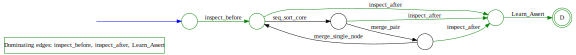
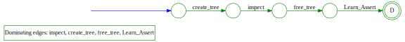

Learning the Language of Error: Accessory Information
Demos
DockingApproachExample_Ext
Source Code
DockingApproachExample_Ext_Code (original)
The original source project.
DockingApproachExample_Ext_Code (goto)
Full project merged into a single, CBMC-compatible source file.
bubble_sort_linux_false
User bound:
2
Maximum word length:
15
ifstofunctions_defroster
User bound:
1
Maximum word length:
25
merge_sort_false
User bound:
2
Maximum word length:
7

sll_to_dll_rev_false
User bound:
2
Maximum word length:
28
tcas_auto_instrumented
User bound:
1
Maximum word length:
18
tree_false
User bound:
1
Maximum word length:
9

Resources
All automata in .dot, .svg and .png format:
bubble_sort_linux_false.tar.gz
ifstofunctions_defroster.tar.gz
merge_sort_false.tar.gz
sll_to_dll_rev_false.tar.gz
tcas_auto_instrumented.tar.gz
tree_false.tar.gz